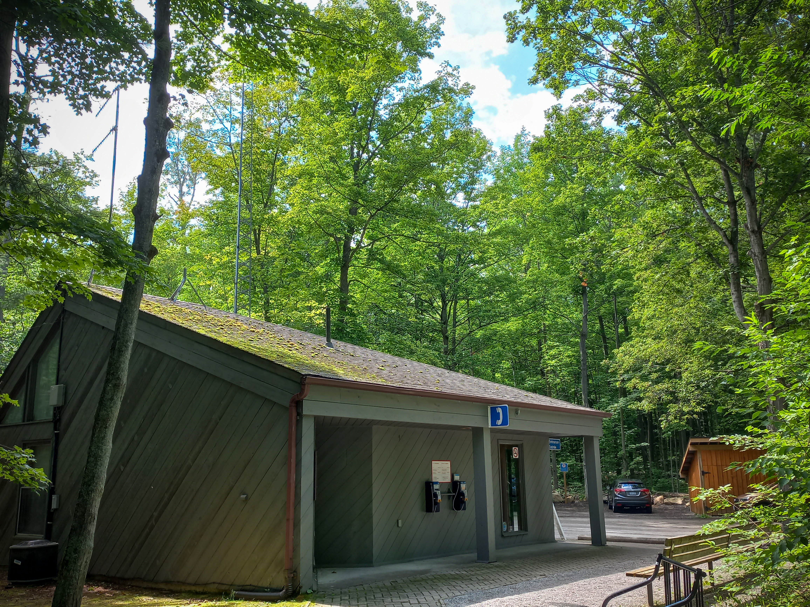
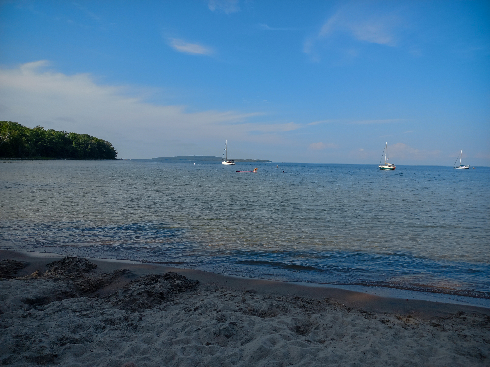
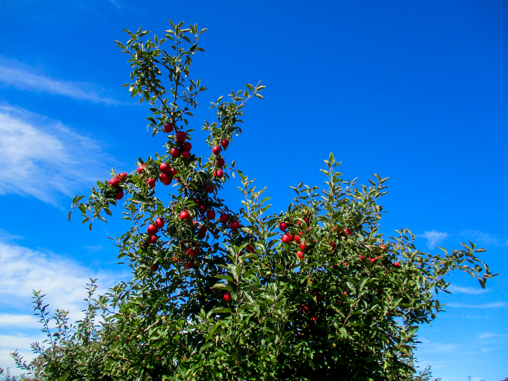
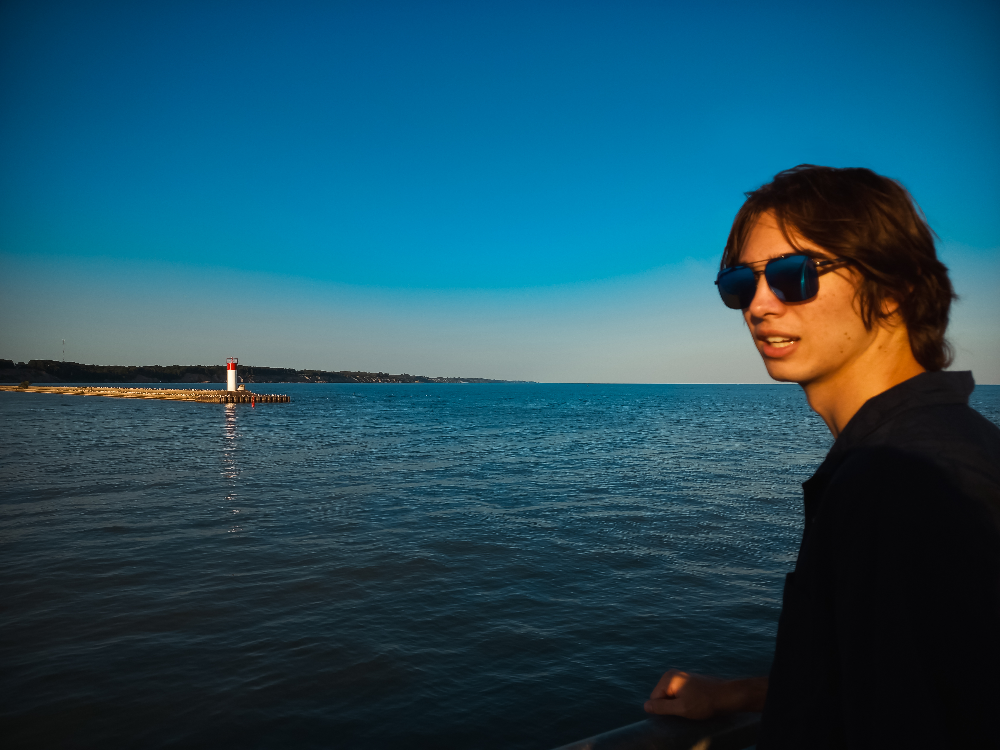

WORK GALLERY
A regularly updated selection of graphic design, branding, visual identity, and photographic work.
GRAPHIC DESIGN
PHOTOGRAPHY




A regularly updated selection of graphic design, branding, visual identity, and photographic work.



